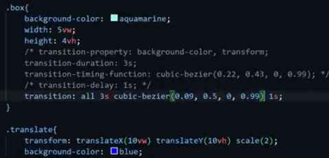
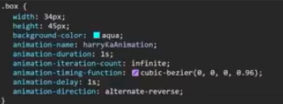
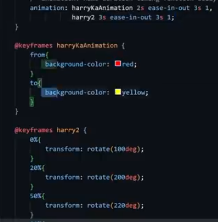

My name is Ritesh Girase
I am very much helpful to all which in return also gives me more love and support
Know the selectors in css like we can style the css with the help of the id and classes
Hii i am a Ritesh. Now go to css file code to see how chils selector is used
In the same way we are having the descendant selector which means if we are writing like div p its show select p from div no matter where it is it should be inside the div
Hii myself ritesh now see the universal selector which metion as * and then also see the pusedo selectors like :hover, :link, :active etc and then know the margin, padding concept and main thing margin collaspe means in case if two margin intersect then atomatically the highest the margin will be get selected.
After this see the property of fonts,text the most and colors how we have can use different colors in the website like darj, hex, rgb, rgba,hsl etc also see the various property of the text like transfom, decoration etc and in fonts family, style etc
The cascade is the algorithm for solving conflicts where multiple CSS rules apply to an HTML element. It's the reason that the text of the button styled with the above CSS will be purple. Position and order of appearance: the order in which your CSS rules appear Specificity: an algorithm that determines which CSS selector has the strongest match Origin: the order in which CSS appears and where it comes from, whether that is a browser style, CSS from a browser extension, or your authored CSS Importance: some CSS rules are weighted more heavily than others, especially with the !important rule type Lets look into all these one by one . Universal Selector: 0 Element selectors and pseudo-elements: 1 Class selectors, attribute selectors, and pseudo-classes: 10 ID selectors: 100 Inline styles: 1000
Lets see the units of size now where we are having px, vw (viewportwidth) which indicates the width according to the view we are having like desktop and adjusting the widht and same height as a vh (viewportheight), and then we are having em ( em=18 px and the we can give further the units as 2em, 3em etc ) and then again we are having the rem which means according to root element unit like if root having 20px then we can set 3rem, 4rem etc and then came percent details like 50%, 60% which sets according to the parent item etc
After this i had used the shadow property you can see in the first div my name is wala and the property we can use it is ( box-shadow: h-offset v-offset blur spread color inset ) and then if we want then can also used the text shadow property in order make the text shadow using method as ( text-shadow: h-offset v-offset blur color; ) and then also see the concept outlines which makes outlines over the content and main thing we cannot change the outline width it is fixed but can use to make content in a box.
After this we have to see the navbar details where we are getting the various options about how we can make the list in a proper format by using it property like its style typoe and all for ex ( disc: (default) - Filled circle marker circle: hollow circle marker square: a filled square marker None: No marker (remove bullets) for unordered list ) and (decimal: (default) - Decimal numbers (1, 2, 3, etc.) decimal-leading-zero: Decimal numbers with leading zeros (01, 02, 03, etc.) lower-roman: lowercase Roman numbers (i, ii, iii,...) upper-roman: uppercase Roman numbers (I, II, III,...) lower-alpha: lowercase alphabetical letters (a, b, c, etc.) upper-alpha: uppercase alphabetical letters (A, B, C, etc.) for ordered list) also we can set url image in a style type etc.
Here i had used most of the use property of overflow so see for future reference.
Transitions control the ease of transformation from one style to another when we hover over that element. Basically, you can control the time take for any transformation to occur. Here we have to see the 4 main properties known as transition-property, duration, -timing function, -delay etc if want we can combine this as transition: all 3s ease-in-out 1s.
CSS Animations help to animate elements from one frame to another. Controlling various CSS properties helps in changing the animation style and time without having the need to use JavaScript for the same.The most basic way to do so is by using “from” and “to”.
 we have various properties of object like object fit and object position where we can adjust our image as per our choice. By giving fit value as a cover it cover the particulat width and height specifies in image Property inspect of parent property etc by giving postion like top-right, bottom-left etc we can show the particular part of the image.